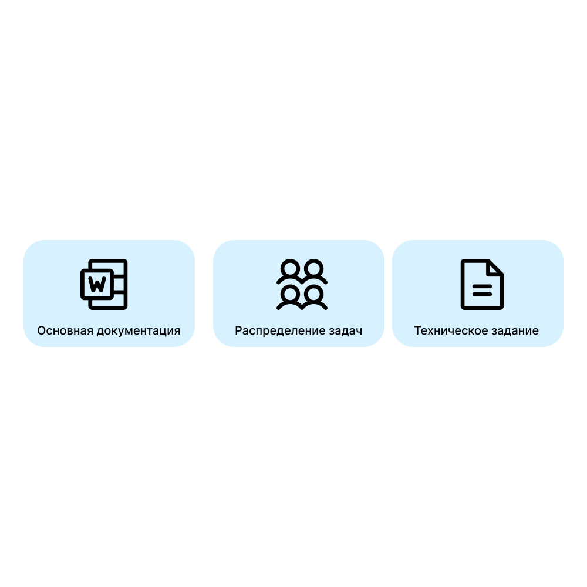

• Утверждена тема проекта «Филин»;
• Проведён анализ целевой аудитории;
• Подготовлены: пользовательское соглашение, техническое задание для каждой группы участников проекта.

• Составлена структура базы данных;
• Созданы макеты интерфейса в Figma;
• Согласованы технические аспекты работы.
• Flutter-экраны созданы;
• Продумывание общих технических нюансов.